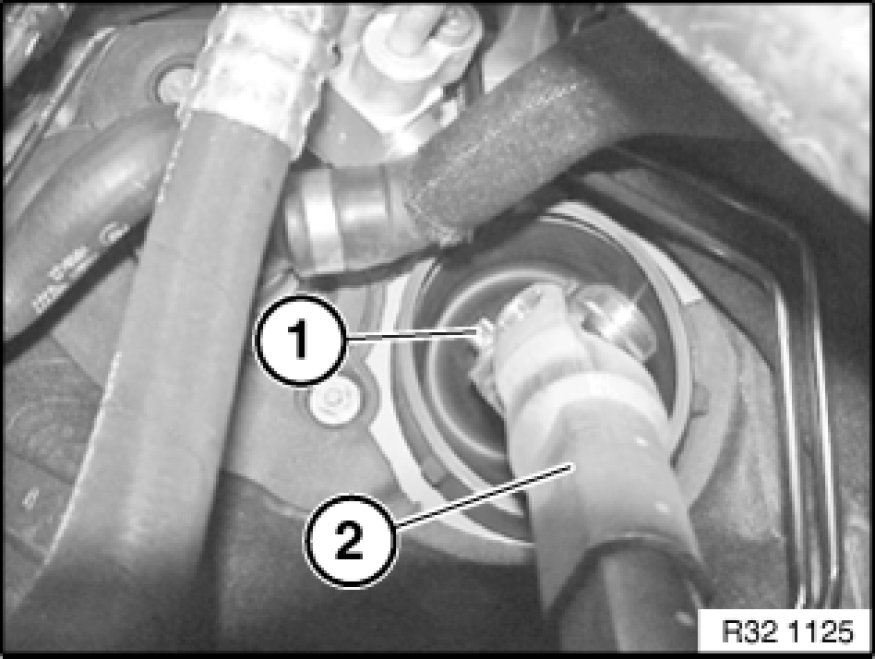
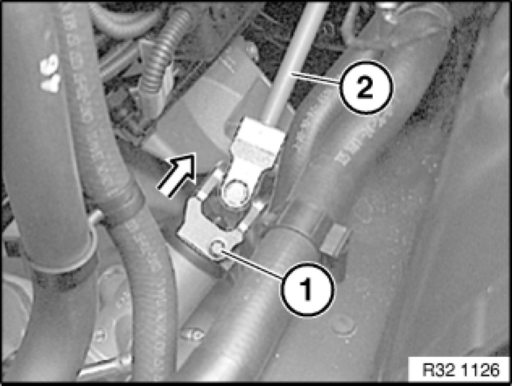

32 31 070 Removing and Installing/Replacing Steering Spindle Lower Section
32 31 070 - Removing and installing / replacing lower section of steering spindle

Important!
If the lower section of the steering spindle is separated from the steering gear/steering column, the steering-column switch cluster may be damaged when the steering wheel is turned.

Necessary preliminary tasks:
- Move steering column in "top" and "extended" position
- Remove trim panel for pedal assembly 51 45 185 Removing and Installing/Replacing Panel For Pedals
- Secure upper section of steering spindle in footwell (can be pushed into steering column)
- N52: Remove intake filter housing with intake hose to intake manifold/system
- N54: remove sound generator
- E88 with N43, N46: Remove intake filter housing

Release clamping screw (1) on steering spindle upper section (2).
Installation Note:
Clean thread to remove all remnants of screw securing adhesive.
Replace clamping screw.
Clamping screw must rest in groove of steering column.
No kinking permitted!
Tightening torque 32 31 1AZ Specifications.

Release clamping screw (1) on steering spindle lower section (2).
Move steering wheel to straight-ahead position and remove ignition key.
Detach steering spindle lower section in direction of arrow from steering gear.
Detach lower section of steering spindle from steering column.
Installation Note:
Clean thread to remove all remnants of screw securing adhesive.
Replace clamping screw.
Clamping screw must rest in groove of steering gear.
Steering spindle lower section can only be attached in one position on steering column and steering gear.
Tightening torque 32 31 1AZ Specifications.
After installation:
- Turn steering wheel in both directions to full lock. The airbag warning lamp must not light up in the process.
- Carry out steering angle sensor adjustment / adjustment for active front steering
- Check directional stability of car